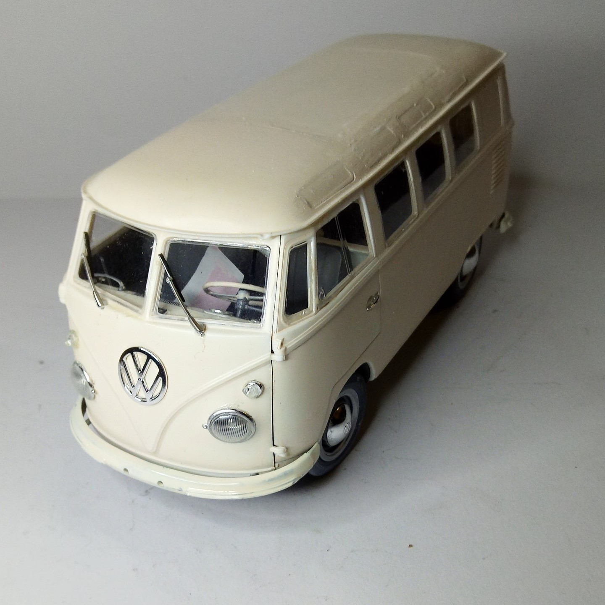
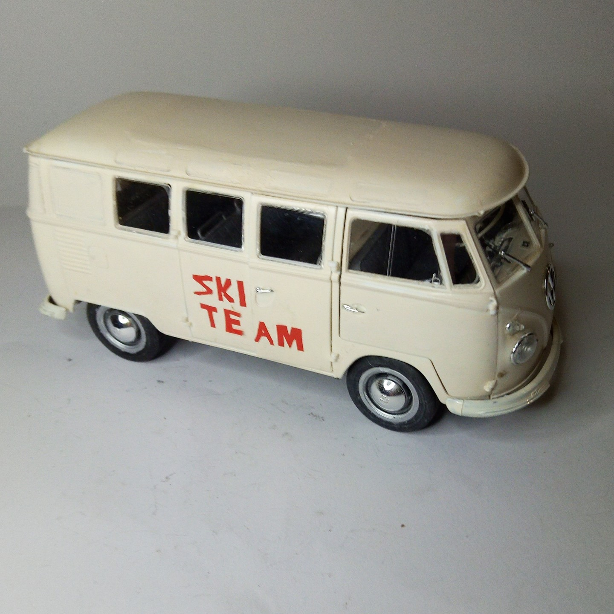

Auto e veicoli stradali · scale model archive
Volkswagen T2 Transporter
Volkswagen T2 Transporter — Kit: Revell, Scale: 1/24. Ferrara-Ziano di Fiemme 1976 Ferrara-Passo Mendola 1977 1978 S. Stefano summer camp Me and Sandro…

Photo gallery

English description
Ferrara-Ziano di Fiemme 1976 Ferrara-Passo Mendola 1977 1978
S. Stefano summer camp
Me and Sandro actually drove it.... no brakes at all....
#campeggio #PassoMendola #Zianodifiemme
Descrizione italiana
Ferrara-Ziano di Fiemme 1976 Ferrara-Passo Mendola 1977 1978.
S. Stefano campo estivo.
Io e Sandro lo guidammo davvero… senza freni, proprio…